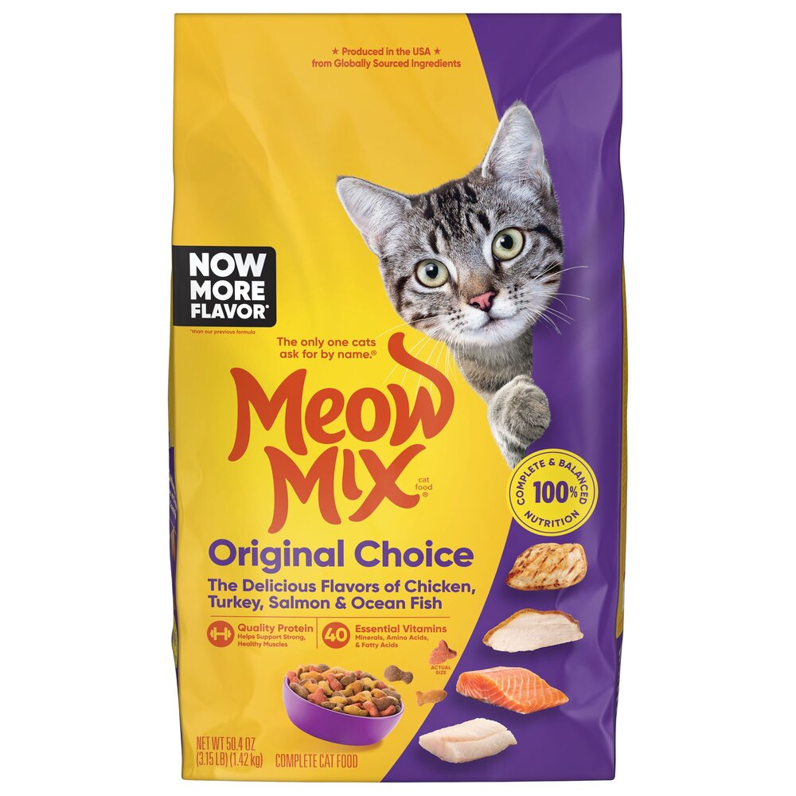

Lulu ir četrus gadus veca, mierīga un patstāvīga. Viņas dienas lielākā daļa paiet atpūšoties un guļot, taču tajā ir arī savas mazās aktivitātes. No rīta viņa parasti mostas lēnām, nesteidzīgi pārvietojas pa māju un dodas pie savas barības. Viņai patīk gan slapjā barība, gan sausā barība, un neizpaliek arī kārumi, kurus viņa saņem kā nelielu gardumu. Rīts ir periods, kad viņa koncentrējas uz ēšanu un atpūtu. Pēcpusdienas lielākoties paiet gulēšanai. Lulu dod priekšroku pūkainām segām, uz kurām viņa guļ, iegūstot siltumu un komfortu. Tāpat viņai patīk skapji, kuros ir klusi un tumši, jo tur viņa jūtas droši. Šajā laikā viņa gandrīz neko nedara, vienkārši atpūšas un atjauno enerģiju nākamajām aktivitātēm. Vakars ir aktīvākais dienas posms. Tad Lulu bieži dodas medīt peles, parādot savus dabiskos instinktus. Tas ir vienīgais brīdis, kad viņa ir tiešām darbīga un aktīva. Medību laikā viņa izmanto savas prasmes un uzmanību, lai atrastu un noķertu mazos dzīvniekus. Pēc tam, kad medības ir beigušās, viņa atgriežas mājās un parasti atpūšas vēl kādu brīdi. Visu dienu Lulu demonstrē savu mierīgo raksturu. Viņa nerada daudz trokšņa, nerīkojas uzbudināti un parasti neinteresējas par rotaļlietām. Katrs dienas brīdis ir rūpīgi sadalīts starp ēšanu, atpūtu un medībām, un tas veido viņas ikdienas ritmu.
| Laiks | Darbības | |
|---|---|---|
| Ko dara | Kur atrodas | |
| Rīts | Ēd barību un kārumus | Virtuvē |
| Pēcpusdiena | Guļ uz pūkainas segas vai skapī | |
| Vakars | Medī peles | Ārā |
Uzslēdz uz šo bildi, lai dotos nopirkt tieši īsto barību savam kaķim!
